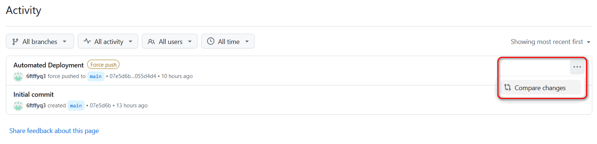

GitHub Activity View
Each GitHub repo has an activity view, which shows all commit activities and file changes in each commit. Even if you delete branches or make force pushes, historical commits are still there. It implies that anyone who has read access to repos can see the whole history, which is true for all public repos.
On one hand, it is a feature that can mitigate data loss due to accidental or malicious. On the other hand, it causes privacy issues if users do not know the existence of activity views and understand their implications.
For the purposes of this blog, since there is nothing to hide, I feel OK to generate contents in a public repo and publish to GitHub Pages. The purpose of the force pushes in the blog repo is to prevent git history from affecting the efficiency of pulls and pushes, instead of trying to hide modification history.
Here is a screenshot of the activity view of the public blog repo:

You can click on the dots at the right end of each commit, and then click the Compare changes button to view file changes.
On this page, since the commit is from a force push, there will not be difference shown compared to the previous commit. However, all text and image files are displayed, with some large files requiring you to click on Load diff to view. Binary files are not shown, and there are no download buttons for files.
To download a previous orphan commit including binary files, you can use the following command:
git clone --revision 07e5d6bd18f5404f9d363f11b5dcbeda0a4530f0 --depth 1 https://github.com/6ftffyq3/blog.git
The hash after --revision is the hash of the commit you want to fetch. The above example clones the initial commit of the public blog repo, which contains a README file only.
I am not sure how long these orphan commits will persist in the GitHub remote repo. I searched the Internet and found claims that git garbage collection can happen on GitHub with some unknown conditions. Thus, it is not guaranteed that a very old commit can still be retrieved in this way. I am not sure whether the activity view can still show the contents of files in an orphan commit when it is garbage collected.